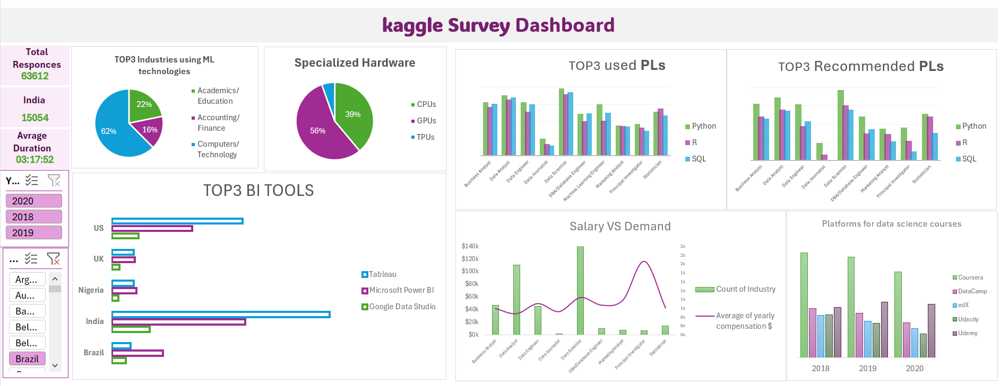
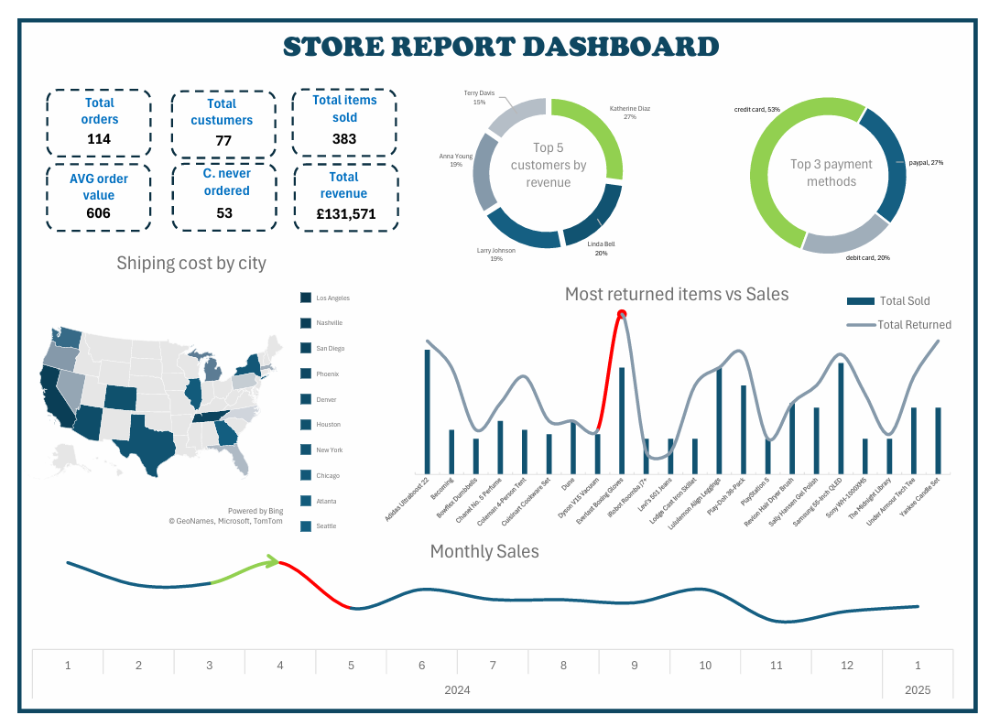
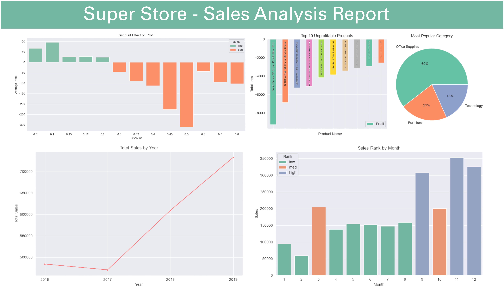

"I find the meaning in data."
Data Analyst with a strong scientific background in Microbiology. Bridging life sciences and advanced data systems to transform raw metrics into actionable insight and storytelling.
Graduated with a Bachelor's degree in Microbiology from Tanta University (GPA 92.7% - Excellent with honours), building rigorous analytical and research discipline.
Combining biological sciences with modern data tools like Python, SQL, and R to unlock deep insights in healthcare, life sciences, and research sectors.
Sharpening technical execution through the Digital Egypt Pioneers Initiative (DEPI) and IEEE Tanta Student Branch with hands-on enterprise-level projects.

Analyzed the Kaggle Data Science Survey across 2018–2020 (>62,000 rows, ~300 columns) using Power Query, Power Pivot, Pivot Tables, and interactive dashboard creation for data storytelling.

Designed relational database in SQL Server with 100+ realistic records, advanced JOINs, window functions, and exported results to Excel for KPI dashboards.

End-to-end Exploratory Data Analysis (EDA) of the Sample Superstore dataset using Pandas, NumPy, Matplotlib, and Seaborn to extract key profit and shipping insights.
Digital Egypt Pioneers Initiative (DEPI) • Hybrid
Building practical Python and SQL skills through hands-on data analysis projects and exercises, strengthening professional presentation and communication.
IEEE Tanta Student Branch • Remote
Completed Excel and SQL phases with 3 practical projects delivered. Conducted SQL querying, joins, subqueries, and presented data storytelling results.
Parkville • Remote
Multidisciplinary pharmaceutical internship covering marketing, R&D, supply chain, pharmaceutical aesthetics, and AI applications in pharmaceutical research.
Tanta University • Tanta, Egypt
Graduated with GPA 92.7% - Excellent with honours, building a solid scientific research and biological foundation.
Gharbiya STEM High School • Tanta, Al Gharbiyah, Egypt
Project-based, self-learning focused curriculum fostering critical thinking, research, and scientific inquiry.
Tanta-UCCD-Medical Campus (Marketing & Media Team)
Managed an 8-member design team, produced ~25 marketing visuals using Canva, coordinated tasks, and maintained brand consistency.
Human Squad System Event (Biology Dept) - STEM Gharbiya
Delivered 4 lectures across diverse biological topics and contributed to on-site event planning, coordination, and public speaking.
Whether you are looking for a dedicated Data Analyst, a research collaborator, or want to discuss bioinformatic insights, my inbox is always open.